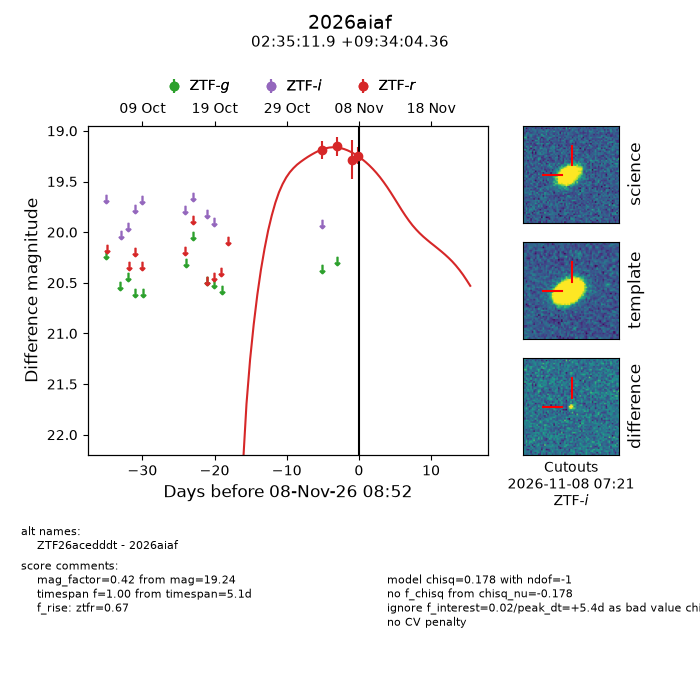
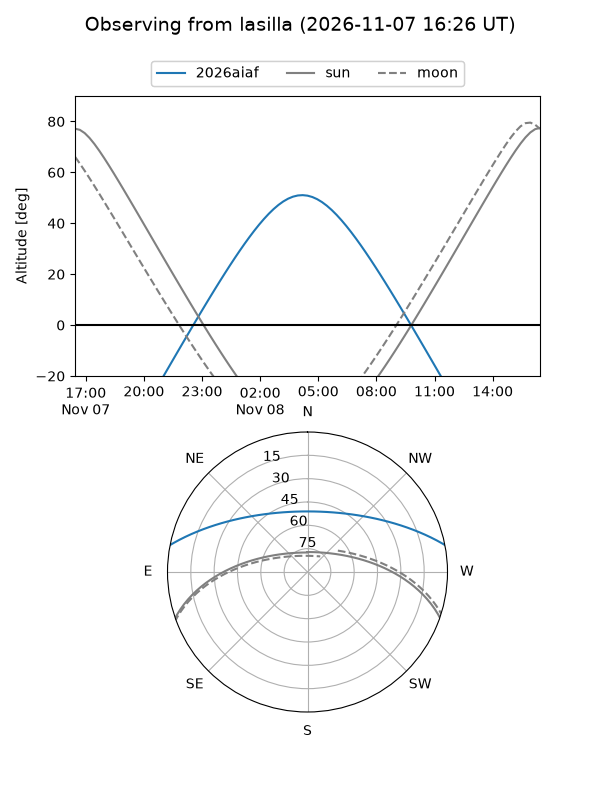
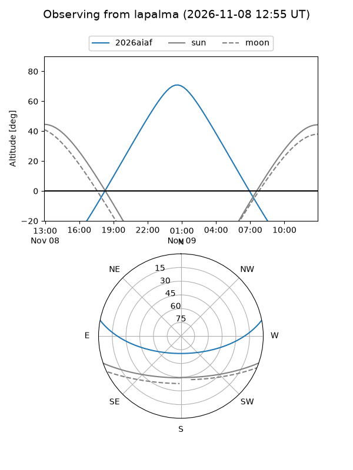
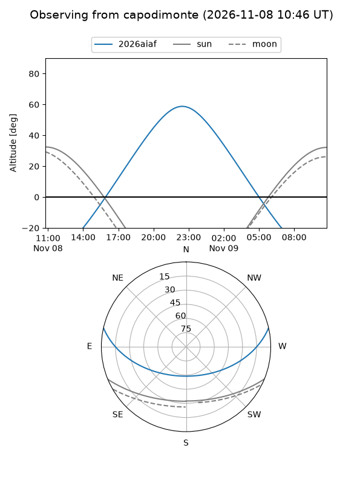
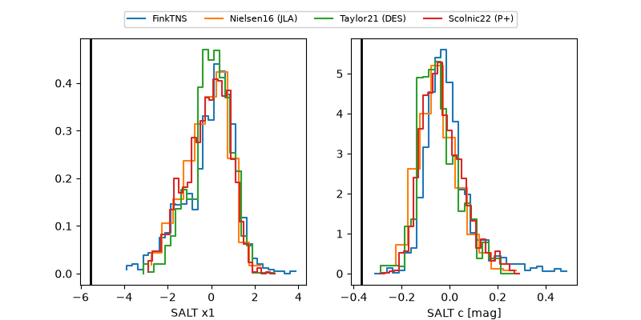

2026aiaf
Target 2026aiaf at 2026-11-08 08:54
Aliases and brokers:
FINK-ZTF: ztf.fink-portal.org/ZTF26acedddt
Lasair-ZTF: lasair-ztf.lsst.ac.uk/objects/ZTF26acedddt
ALeRCE-ZTF: alerce.online/object/ZTF26acedddt
YSE-PZ: ziggy.ucolick.org/yse/transient_detail/2026aiaf
TNS name: wis-tns.org/object/2026aiaf
Direct TNS query: direct search
alt names
ZTF26acedddt (ztf,fink_ztf)
2026aiaf (tns,yse)
Coordinates:
equatorial (ra, dec) = 38.7997,+9.56788
equatorial (HMS+DMS) = 02:35:11.93,+09:34:04.36
galactic (l, b) = (160.9234,-45.51205)
Flags:
peak dt: +5.4
Photometry:
last ztfr=19.24
4 ztfr detections
Lightcurve

Visibility



Additional plots
